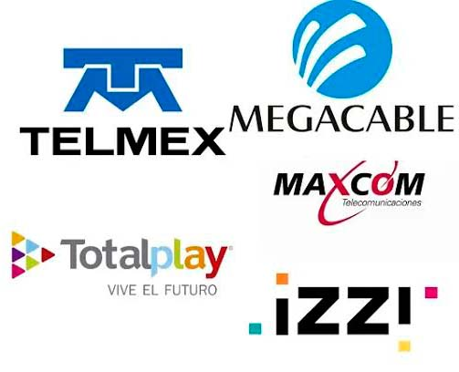
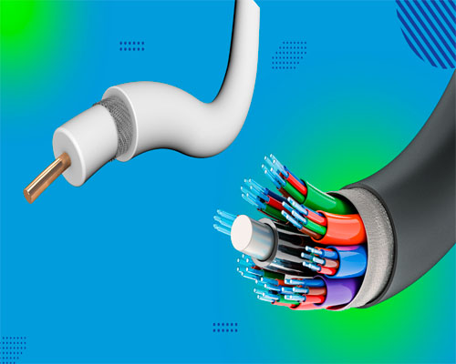
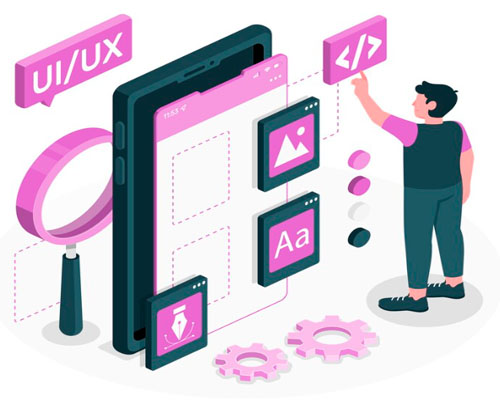
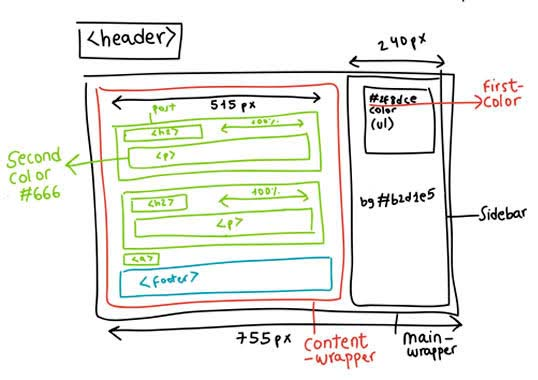
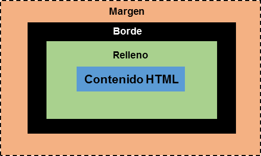

¿Qué es internet?
Internet es una red global que conecta millones de computadoras, personas y otros dispositivos en todo el mundo. Nos permite acceder a información desde cualquier lugar.
Internet es una red global que conecta millones de computadoras, personas y otros dispositivos en todo el mundo. Nos permite acceder a información desde cualquier lugar.

Un proveedor de Internet es una empresa que te proporciona acceso a Internet. Utilizan diferentes tecnologías, como líneas de cable, líneas telefónicas, fibra óptica, satélites o redes celulares, para conectar tu hogar, empresa o dispositivo móvil a Internet.

Un servidor local es aquel servidor que ha sido instalado en un equipo determinado del entorno con el fin de trabajar offline y online.
Es que es más segura, ya que nadie ajeno al centro podría acceder a esa carpeta y a los datos que se encuentren en la misma.
No puedes acceder de forma remota. Es decir, si no estás conectado a la wifi donde esté ese servidor, no se podrá acceder a los contenidos del mismo y que es más complejo de configurar.
La nube es la evolución de un servidor local. No hay que estar bajo la misma Red o Wifi. Esto permite trabajar de forma colaborativa y compartir en tiempo real archivos sin necesidad de estar en el mismo lugar.
Puedes acceder desde cualquier punto, siempre y cuando tengas acceso a internet.
Suelen tener una limitación de espacio a la hora de almacenar archivos.Normalmente hay que tener una cuenta para poder acceder a esos documentos, y eso implica que la gestión de datos sea por terceros. Para poder usar los editores online has de tener conexión a internet, sino las herramientas no funcionan.

El diseño de Experiencia de Usuario (UX) es el proceso de crear productos, sistemas o servicios que proporcionen experiencias significativas y relevantes a los usuarios. Involucra todo el proceso de adquisición e integración del producto, lo que incluye aspectos de marca, diseño, usabilidad y funcionalidad. Una gran parte del diseño UX es hacer que el producto final resulte funcional para proporcionar una experiencia positiva, eficiente y satisfactoria para el usuario.
El diseño de Interfaz de Usuario (UI) se enfoca en los aspectos visuales e interactivos de la interfaz de un producto. Implica determinar la apariencia y el comportamiento del producto, incluidos el diseño, los colores, la tipografía y los elementos interactivos, para asegurar que sea visualmente atractivo y fácil de usar. El diseño UI se encarga de crear elementos visuales e interactivos de un producto para lograr una experiencia de usuario atractiva, intuitiva y cohesiva.

La maquetación web es el proceso de estructurar los elementos visuales y funcionales de una página utilizando lenguajes de programación como HTML, CSS y JavaScript. Su objetivo principal es organizar el contenido (textos, imágenes, botones, banners publicitarios, vídeos, etc.) de forma lógica, estética y accesible tanto para los visitantes como para los motores de búsqueda.

el término "modelo de caja" se utiliza cuando se habla de diseño y maquetación web.El modelo de cuadro CSS es esencialmente un cuadro que envuelve cada elemento HTML. Cada caja consta de cuatro partes: contenido, relleno, bordes y márgenes.